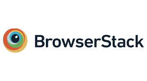
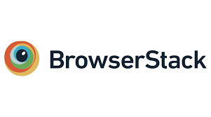

Hi 👋,
My Name is
Jeff Andrew
Test Automation Engineer
From New York, USA

A skillful software automation engineer with extensive hands-on expertise in crafting and managing automated test scripts utilizing Robot Framework. Exhibits a robust comprehension of Pharma IT systems in the role of a Test Automation Engineer, ensuring the efficacy and dependability of testing procedures.
Archimeds Digital | New York, USA | March 2022 - Present
Prist University | Jun 2019 - Jun 2021
Chennai, India
Madras University | Jun 2021 - Jun 2026
Chennai, India
Simply dummy text of the printing and typesetting industry.


 



info.harish.p@gmail.com
Things I've built so far
Portfolio Management is a leadership tool to oversee product activities, track investments, and evaluate outcomes across business units. It is used by management professionals like project managers and IT directors.
Request Hub an enterprise access management platform supporting on-premises applications such as Jira, Bitbucket, qTest,Jenkins, and JFrog. The platform streamlined the process of raising and approving access requests, ensuring secure workflows, compliance adherence, and efficient management of user access across critical enterprise tools.
Kanban is a Project management tool to maintain project activities for business. It is also used to track the task progress and to create Jira issue types through this application. This tool integrates with EAT applications.
Testing CoE & IT Tools is a dedicated platform to manage and support critical testing tools like Tricentis NeoLoad for performance testing and BrowserStack for mobile application testing. These tools help ensure software quality and are used by professionals like QA leads, administrators, and IT managers.